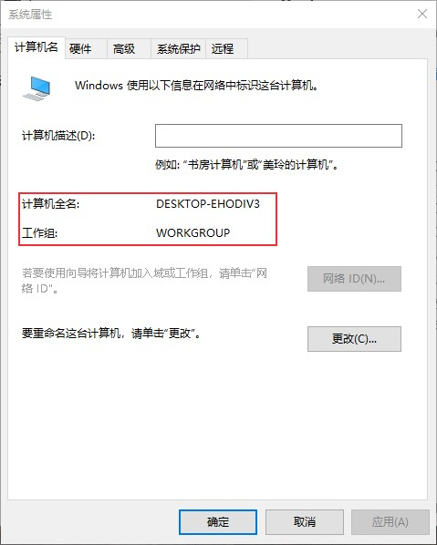
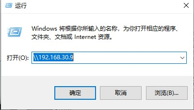
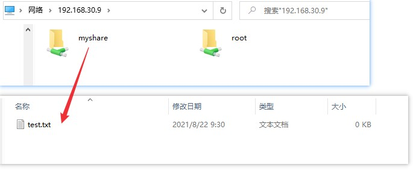

Samba是用于Linux/Unix系统与Windows之间共享文件的软件，本文记录一下Samba的安装及使用方法。
samba简介
samba的功能都是通过一个CIFS（Common Internet File System）协议套件来管理的，这个名字是由微软引入的。
Samba是一个开源的CIFS实现，官网地址为 https://www.samba.org/samba/。
SMB (Server Message Block Protocol)协议是一种客户端/服务器通信协议，它主要包括smbd 和 nmbd，提供四种基本服务：
- 文件、打印服务：由SMB守护进程smbd提供
- 验证和授权：“共享模式”和“用户模式”
- 域解析：模拟Windows NT域系统，主要包括广播和点对点两种形式，还有一种是使用NBNS (NetBIOS Name Service)服务器，微软称为WINS服务(Windows Internet Name Service)
- 服务声明(浏览)：声明网络上计算机提供的可浏览服务(文件和打印共享)列表。
前两个服务由smbd实现，后两个由nmbd来实现。
samba安装
centos7：
1 | sudo yum install -y samba |
ubuntu：
1 | sudo apt update |
smbclient是一个smb服务器的客户端管理程序。
查看安装状态1
2
3
4
5
6
7
8
9
10
11
12$ whereis samba
samba: /usr/lib64/samba /etc/samba /usr/libexec/samba /usr/share/man/man7/samba.7.gz
$ rpm -qa | grep samba
samba-common-4.10.16-15.el7_9.noarch
samba-client-4.10.16-15.el7_9.x86_64
samba-client-libs-4.10.16-15.el7_9.x86_64
samba-common-libs-4.10.16-15.el7_9.x86_64
samba-libs-4.10.16-15.el7_9.x86_64
samba-common-tools-4.10.16-15.el7_9.x86_64
samba-4.10.16-15.el7_9.x86_64
$ smbd --version
Version 4.10.16
samba配置
1. 查看windows工作组
通过cmd命令 net config workstation 查看工作组：1
2
3
4
5
6
7
8
9
10
11
12
13
14
15
16
17
18C:\Users\10287>net config workstation
计算机名 \\DESKTOP-EHODIV3
计算机全名 DESKTOP-EHODIV3
用户名 Administrator
工作站正运行于
NetBT_Tcpip_{E484BACB-E20F-47EB-8727-EF799C2C041E} (0A0027000016)
软件版本 Windows 10 Home China
工作站域 WORKGROUP
登录域 DESKTOP-EHODIV3
COM 打开超时 (秒) 0
COM 发送计数 (字节) 16
COM 发送超时 (毫秒) 250
命令成功完成。
或者查看系统属性：此电脑 -> 属性 -> 高级系统设置 -> 计算机名 查看工作组

2. 关闭防火墙
配置之前先关闭linux防火墙
查看防⽕火墙状态1
2systemctl status firewalld
systemctl status firewalld.service
停⽌止firewall1
systemctl stop firewalld.service
禁止firewall开机启动1
systemctl disable firewalld.service
1 | [root@Server apTest]# systemctl start smb.service |
关闭selinux
vi /etc/selinux/config
注释SELINUX=enforcing，添加SELINUX=disabled
1 | # This file controls the state of SELinux on the system. |
3. 修改配置文件
先创建一个共享目录或者使用已有的目录。
1 | $ mkdir -p /var/samba/share |
配置读写权限
1 | chmod -R 777 /var/samba |
配置smb.conf文件：vi /etc/samba/smb.conf
添加的共享名为myshare，这个名称是windows访问时会显示的名称，可以随意设置。
1 | [global] |
4. 配置samba登录用户密码
可以使用groupadd 和 useradd命令添加用户组，下面我直接使用root用户：1
2
3
4
5$ smbpasswd -a root
New SMB password:
Retype new SMB password:
Added user root.
新输的密码就是远程登录密码。
5. 启动服务
配置文件设置完成后启动samba服务，并设置开机启动
启动 smb.service 和 nmb.service两个服务
1 | systemctl start smb.service |
重启smb服务命令：
systemctl restart smb.service
设置开机启动
1 | systemctl enable smb.service |
6. windows访问共享文件
win + r 输入samba服务器地址，访问samba共享文件

也可以在文件浏览器中输入地址 \\192.168.30.9 访问共享文件。
输入用户名密码后就可以访问Linux共享文件了！

可以对myshare中的文件进行读写操作以及文件创建。
smbclient使用
samba-client是linux中的客户端管理程序，如果要在linux/unix中访问samba文件可以使用smbclient工具。
登录samba服务器
1 | $ smbclient //192.168.30.9/myshare |
或者
1 | $ smbclient //192.168.30.9/myshare/ -U root%12345678 |
登录成功后就可以对共享文件进行访问了：
1 | smb: \> ls |
下载
下载文件：
1 | smb: \> get test.txt /root/samba/test.txt |
1 | $ ll /root/samba/ |
指定日志存放目录
1 | get test.txt /root/samba/test.txt -l /tmp/smb/smbalog |
下载目录：
1 | $ smbclient //192.168.30.9/myshare/ -U root%12345678 -c 'prompt OFF; recurse ON; cd /sambafolder/; lcd /tmp/smb/localfolder/; mget *' -l /tmp/smb/smbalog |
上传
上传文件
1 | smb: \> put /root/samba/test.txt test.txt |
上传目录
1 | $ smbclient //192.168.30.9/myshare/ -U root%12345678 -c 'prompt OFF; recurse ON; cd /sambafolder/; lcd /tmp/smb/localfolder/; mput *' -l /tmp/smb/smbalog |
更多smbclient使用方法参考：https://www.samba.org/samba/docs/current/man-html/smbclient.1.html
参考文档：
- https://www.liquidweb.com/kb/how-to-install-samba-on-linux-windows/
- https://www.samba.org/samba/docs/SambaIntro.html
samba离线安装配置
离线安装可参考Ubuntu离线安装samba与配置（.tar方式安装）
配置文件路径：/usr/local/samba/lib/smb.conf
配置文件修改后，可通过以下步骤重启服务：
1 | # 杀掉进程 |
检查是否启动成功：
1 | $ ps auxf | grep nmbd |
本文标题:使用samba实现linux和windows文件共享
文章作者:hiyo
文章链接:https://hiyongz.github.io/posts/linux-tools-for-samba/
许可协议:本博客文章除特别声明外，均采用CC BY-NC-ND 4.0 许可协议。转载请保留原文链接及作者。